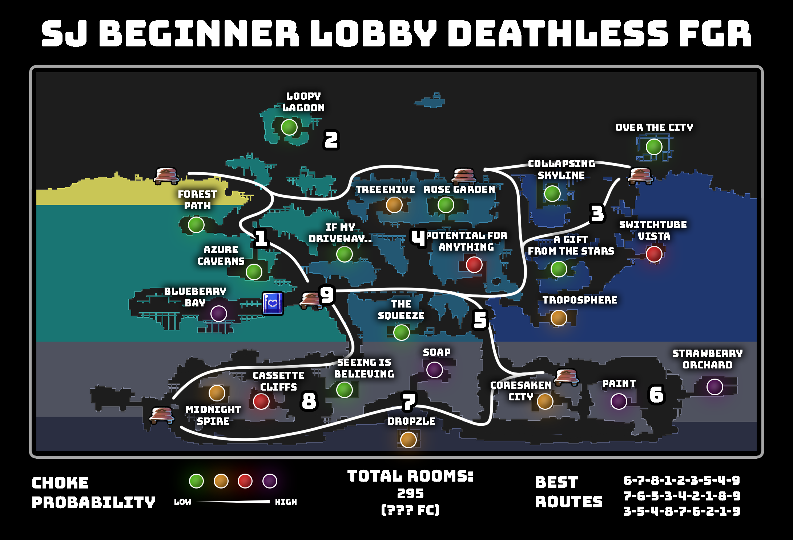

Test
Un Test est l'unité de base du graphe de scène. Chaque objet visible ou logique dans la scène — mesh, lumière, caméra, trigger — est un nœud.
Un
SceneNode seul ne se dessine pas. C'est un conteneur de transformation et de composants. Attache un MeshComponent pour le rendre visible.Un
SceneNode seul ne se dessine pas. C'est un conteneur de transformation et de composants. Attache un MeshComponent pour le rendre visible.Un
SceneNode seul ne se dessine pas. C'est un conteneur de transformation et de composants. Attache un MeshComponent pour le rendre visible.Properties
| Property | Type | Description |
|---|---|---|
| name | string | This is a descriptive text I guess |
| name | string | This is a descriptive text I guess |
Public Methods
| Property | Type | Description |
|---|---|---|
| name | string | This is a descriptive text I guess |
| name | string | This is a descriptive text I guess |
Initialization
Les nœuds sont créés et gérés par la Scene. Ne les instancie jamais directement avec new — utilise scene.createNode() pour que le cycle de vie soit géré correctement.
Creation Exemple
// Créer un nœud simple SceneNode* node = scene.createNode("MonObjet"); // Positionner dans la scène node->transform.setPosition(Vec3(0.0f, 1.0f, -5.0f)); node->transform.setScale(Vec3(2.0f)); // Attacher un mesh auto* mesh = node->addComponent<MeshComponent>(); mesh->loadFromFile("assets/cube.obj");
Tu peux traverser la hiérarchie avec findChild(). La recherche est récursive par défaut.

Exemple en image I guess